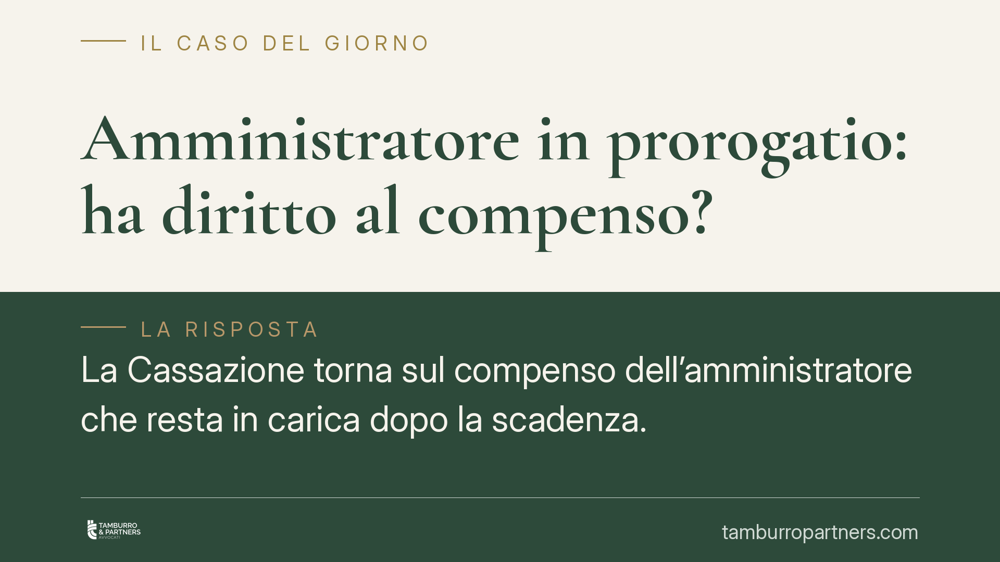

Amministratore in prorogatio: ha diritto al compenso?
La Cassazione torna sul compenso dell'amministratore che resta in carica dopo la scadenza. Il principio: il credito per gli atti urgenti è riconoscibile, ma va provato con la contabilità approvata dall'assemblea e con i movimenti sul conto condominiale. Gli esborsi anticipati con mezzi personali, come assegni propri, non bastano a fondare la pretesa verso il condominio.

Il caso
Alla scadenza dell'incarico, l'amministratore non sempre viene immediatamente sostituito. Nell'intervallo tra la cessazione e la nomina del successore, si apre la cosiddetta *prorogatio*: l'amministratore uscente conserva poteri limitati, finalizzati a non lasciare il condominio privo di gestione.
Il nodo pratico è noto. Chi opera in prorogatio ha diritto a un compenso per quegli atti? E, soprattutto, come prova di aver sostenuto spese nell'interesse del condominio? La Cassazione ha affrontato il tema distinguendo nettamente tra ciò che l'amministratore può fare e ciò che riesce a dimostrare.
Inquadramento normativo
La prorogatio non nasce da una norma dedicata. È un istituto di elaborazione giurisprudenziale, ancorato all'art. 1129 cod. civ. sulla durata e gestione dell'incarico, e ai principi del mandato richiamati dagli artt. 1710 e 1711 cod. civ., che impongono all'amministratore di agire con diligenza e di completare le attività già avviate anche dopo la cessazione, per evitare pregiudizi.
In questa fase i poteri non sono pieni. L'amministratore può compiere solo gli atti urgenti e indifferibili: quelli necessari a conservare il patrimonio comune e a garantire la continuità dei servizi essenziali. È esclusa la gestione ordinaria protratta nel tempo, che presupporrebbe un mandato ancora valido.
Sul piano probatorio entra in gioco l'art. 1129, comma 7, cod. civ., che impone il transito delle somme condominiali su un apposito conto corrente intestato al condominio. A questo si lega l'approvazione del rendiconto ex artt. 1130-bis e 1135 cod. civ.: è l'assemblea che, approvando la contabilità, rende i crediti e i debiti opponibili al condominio.
Cosa ha stabilito la Cassazione
La Suprema Corte, nei suoi interventi più recenti in materia (estremi da verificare prima di ogni utilizzo in sede giudiziale), ha riconosciuto all'amministratore in prorogatio il diritto al compenso per gli atti urgenti effettivamente svolti. Il principio, però, è subordinato a una condizione precisa: il credito deve risultare dalla contabilità approvata dall'assemblea e trovare riscontro nei movimenti del conto corrente condominiale.
La conseguenza è rigorosa. Le spese anticipate dall'amministratore con mezzi personali, come assegni tratti sul proprio conto, non sono sufficienti a fondare la pretesa verso il condominio. La ragione è coerente con il sistema: se la legge impone il transito delle somme sul conto condominiale, chi aggira quella regola non può poi invocare a proprio favore un esborso che non ha lasciato traccia nella contabilità comune.
Implicazioni pratiche
Per l'amministratore uscente, la pronuncia sposta l'attenzione dalla titolarità del diritto alla sua dimostrazione. Non basta aver agito nell'interesse del condominio: occorre aver documentato ogni movimento nel modo prescritto.
Per il condominio e i condomini, il principio offre uno strumento di difesa contro richieste di rimborso non tracciate. Ogni credito preteso dall'amministratore in prorogatio deve poter essere verificato sul conto e deve passare dall'approvazione assembleare della contabilità.
Resta ferma la distinzione tra atti urgenti e gestione ordinaria. Un amministratore che, dopo la scadenza, continui a gestire il condominio come se l'incarico fosse ancora pieno non può pretendere il compenso per un'attività che eccede i limiti della prorogatio.
Cosa fare in concreto
- Fare transitare ogni pagamento e incasso esclusivamente sul conto corrente condominiale ex art. 1129, comma 7, cod. civ., evitando anticipazioni con strumenti personali.
- Documentare la natura urgente e indifferibile di ciascun atto compiuto durante la prorogatio, con data e motivazione.
- Portare tempestivamente in assemblea la contabilità relativa al periodo di prorogatio, affinché i crediti e i debiti siano approvati e opponibili.
- Conservare i giustificativi di spesa collegati ai movimenti del conto, così da renderli verificabili in caso di contestazione.
- Verificare sempre gli estremi aggiornati delle pronunce di legittimità prima di fondarvi una posizione in giudizio.
---
Contributo informativo a cura di Tamburro & Partners - Avv. Giuseppe Tamburro. Non costituisce parere legale.
Ogni condominio ha una storia a sé.
Se gestisci un'amministrazione e vuoi un confronto su una specifica questione condominiale, scrivi allo studio. Ti rispondiamo entro un giorno lavorativo.